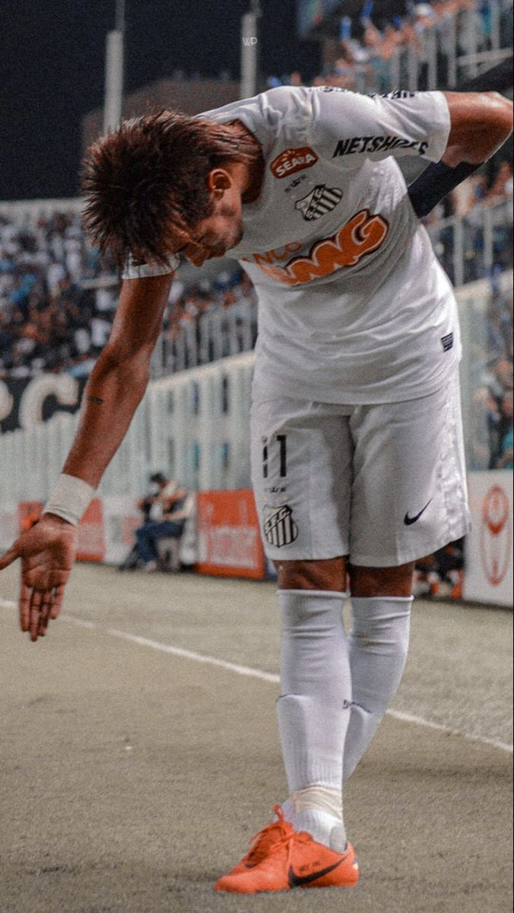

Luis Eduardo de M. Lima 1º ano A N:28

Neymar Jr
Quem é Neymar Jr?
Neymar da Silva Santos Júnior (Mogi das Cruzes, 5 de fevereiro de 1992) é um futebolista brasileiro que atua como atacante. Atualmente, joga pelo Santos.
Revelado pelo Santos em 2009, desde cedo correspondeu às expectativas e conquistou diversos títulos com o clube, incluindo dois Campeonatos Paulistas seguidos, uma Copa do Brasil e uma Libertadores, sendo esta a primeira do Peixe desde 1963. Ganhou por duas vezes seguidas o prêmio de melhor jogador sul-americano do ano, em 2011 e 2012, e um prêmio Puskás de gol mais bonito do ano em 2011. Em 2013, após ser protagonista no título da Copa das Confederações pela Seleção Brasileira, Neymar foi vendido ao Barcelona numa transação que é considerada a venda mais cara da história do futebol brasileiro. Na sua segunda temporada pelo clube espanhol, o jogador estrelou um brilhante trio de ataque conhecido como "MSN", ao lado dos também sul-americanos Lionel Messi e Luis Suárez. Juntos, faturaram a tríplice coroa e ajudaram o Barça a conquistar a La Liga, a Copa do Rei e Liga dos Campeões da UEFA, com Neymar sendo decisivo e terminando como um dos artilheiros da Champions. Além disso, o brasileiro consagrou-se como um dos melhores do mundo e foi finalista da Bola de Ouro da FIFA. Em 2017, com sua venda milionária ao Paris Saint-Germain por 222 milhões de euros, tornou-se a transferência mais cara da história do futebol. Nesse mesmo ano, foi pela segunda vez na carreira um dos três finalistas da premiação da FIFA de melhor jogador do mundo, desta vez nomeada The Best FIFA Football Awards. Na sua terceira temporada em Paris, Neymar ajudou o PSG a chegar a sua primeira final de Liga dos Campeões, em que perderam para o Bayern de Munique. O atacante é o jogador brasileiro com mais gols por essa competição desde 2018, quando superou Kaká.

Seleção Brasileira
Neymar representou a Seleção Brasileira nas categorias Sub-17, Sub-20 e profissional. Pela Seleção principal, fez sua estreia em 2010, aos 18 anos, num amistoso contra os Estados Unidos, onde marcou um gol. Neymar tornou-se o artilheiro do Campeonato Sul-Americano Sub-20 de 2011 com nove gols, incluindo dois na final em um triunfo perante a Seleção Uruguaia, liderando a equipe a conquista do título. Foi convocado pelo então treinador Luiz Felipe Scolari para a disputa da Copa das Confederações FIFA de 2013, onde começou a atuar com a camisa de número 10 e acabou por ser escolhido como o melhor jogador do torneio, contribuindo à conquista brasileira com um gol na final contra a Espanha. Na Copa do Mundo FIFA de 2014, Neymar foi o destaque da Seleção com quatro gols, até sofrer uma lesão em uma vértebra da coluna no jogo das quartas de final contra a Seleção Colombiana, que fez com que ele desfalcasse a equipe pelo restante do torneio.[19] Apesar disso, recebeu a Chuteira de Bronze como o terceiro maior goleador do evento, e fez parte da equipe descrita como "time dos sonhos", com os onze melhores jogadores da competição.